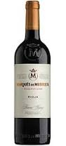

Rioja es una denominación de origen calificada (DOCa) de España con la que se distinguen a ciertos vinos elaborados en áreas de las comunidades autónomas de La Rioja y el País Vasco mayoritariamente, y en menor medida en Navarra y casi despreciable en Castilla y León,3 (menos de 2,5 km²). Por la diversidad orográfica y climática se distinguen tres subzonas de producción —Rioja Alta, Rioja Baja y Rioja Alavesa— donde se originan vinos de distintas características. La producción media anual de vino de Rioja es de 250 millones de litros (85% vino tinto y 15% vino blanco y rosado).
Los vinos de Rioja son frescos, aromáticos, de composición equilibrada y excelente buqué.
El vino de la D.O.Ca. Rioja se identifica por sus contraetiquetas y precintas numeradas.
Desde 2012, Vinoselección reúne en un catálogo anual los mejores vinos de nuestro país y de las zonas vinícolas más prestigiosas del mundo. Creemos que un vino, para ser considerado ‘grande’, debe tener una personalidad única que sea el fiel reflejo del viñedo y del lugar en el que éste se encuentre. Esto sólo se produce en un territorio muy determinado y bajo circunstancias climáticas especiales que permiten establecer una trayectoria de calidad y singularidad a lo largo de los años. Además de todo esto, el gran vino tiene que tener una alta intensidad aromática y gustativa. Los grandes vinos son amplios y con volumen, pero a la vez delicados y sedosos en su paso de boca, con un largo y complejo final que perdura con intensidad y gran diversidad de matices.
Marqués de Vargas ReservaOtro que crece cada mes que transcurre en botella. No es increíble su evolución, y sí un placer porque la bodega se merece más triunfos como este. Puntos: 92. Precio: 16 euros. Variedades: tempranillo y mazuelo. Crianza: 23 meses. Bodega: Marqués de Vargas. Logroño (La Rioja). Tel: 941 261 401. www.marquesdevargas.com |
RodaConsidero que no es la mejor añada para esta casa y este Roda, aunque siempre contenga un nivel altísimo. Está en su mejor momento de consumo y mantiene con facilidad el sobresaliente. Puntos: 92. Precio: 22 euros. Variedades: tempranillo, graciano y garnacha. Crianza: 16 meses. Bodega: Roda. Haro (La Rioja). Tel: 941 30 30 01. www.roda.es |
La Vicalanda ReservaHa mejorado mucho con su permanencia en botella. Mayor integración de sus elementos y aparición de una fruta de gran calidad. Como otros de esta lista, con recorrido aún para ganarse a todos. Puntos: 93. Precio: 15. Variedad: tempranillo. Crianza: 14 meses. Bodega: Bodegas Bilbaínas. Haro (La Rioja). Tel: 941 310 147. www.bodegasbilbainas.com |  |
Marqués de MurrietaMantiene un exquisito equilibrio gracias a un brillante trabajo en bodega y ahora vive un momento óptimo de consumo. Sobresaliente y con precio comedido, para todos los públicos. Puntos: 93. Precio: 17,50. Variedades: tempranillo, garnacha, graciano y mazuelo. Crianza: 20 meses. Bodega: Marqués de Murrieta. Logroño (La Rioja). Tel: 941 271 370/91 782 44 03. www.marquesdemurrieta.com |
MirtoFinura, elegancia, frescura, un nivel superior. La demostración de que bodegas con millones de botellas en el mercado son capaces además de sacar vinos exquisitos. Siempre manda el viñedo. Puntos: 94,5. Precio: 35-40 euros. Variedad: tempranillo. Crianza: 24 meses. Bodega: Ramón Bilbao. Haro (La Rioja). Tel: 941 310 295. www.bodegasramonbilbao.es |
Ángeles de AmarenSensaciones de muy superior calidad con respecto a años precedentes. Una excelente relación calidad-precio en un vino que merece la pena probar. Puntos: 93. Precio: 16 euros. Variedades: tempranillo y graciano. Crianza: 16 meses. Bodega: Amaren. Villabuena de Álava (Álava). Tel: 945 17 52 40. www.bodegasamaren.com |